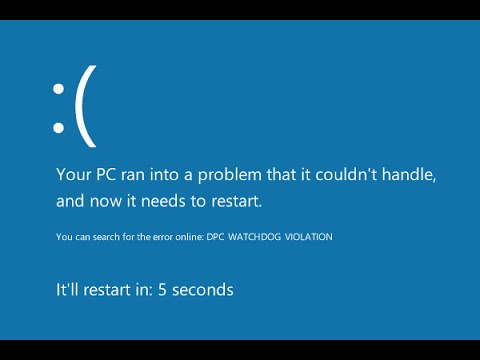

Souvent, mes parents ou mon petit frère me demandent de leur régler leur problème soit sur leurs pc ou sur leurs téléphones.
Généralement c juste ma mère qui me demande de lui copier des fichiers de son pc sur son portable ou l'inverse.
Mais parfois, c'est plus compliqué, comme récemment avec le pc portable de mon frère qui avait sans cesse des écrans bleus au bout de quelques minutes d'utilisation.
Après une bonne après-midi de travail, le pc refonctionnait comme jamais!
Sinon aider mon père a changer la batterie de son téléphone (qui de base a une batterie non-amovible) ou alors lui rooter le téléphone pour ensuite lui installer une rom.

"cracker" des jeux, logiciels...
De nos jours, les jeux-vidéos commencent à couter de plus en plus cher, une alternative à ce problème (ATTENTION C'EST ILLEGAL!) est de cracker le/les jeux en question.
Bien évidemment ce n'est pas respectueux envers les éditeurs ou les créateurs indé, mais pour des gros jeux de grosses boites, ou pour un jeu dont on voudrait d'abord tester la qualité avant d'acheter, le crack est intérressant.
De plus, pour des logiciels tel que photoshop ou Première, qui coûtent littéralement des centaines d'euros, cela permet aux petits budgets d'économiser et de profiter tout de même de logiciels professionnels.
Redstone
Entrée cachée dans une chute d'eau
Ce projet redstone est un système de porte cachée derrière une cascade d'eau, et se referme toute seule.
En repassant sur la plaque de pression pour ressortir, la porte s'ouvre et se referme automatiquement après un certain temps.
Comme on peut le voir dans la video, il faut donner un item pour entrer, on peut récupérer cet item dans un coffre à la gauche de l'entrée de la grotte.
Station automatisée de minecart
J'ai réalisé ce projet pour l'utiliser sur un serveur car les joueurs étaient tous éloignés et un système de minecart pour tous nous relier m'a parut être le meilleur choix pour rester "roleplay".
En actionnant le levier, un minecart est "dispensé" sur un rail isolé entre 4 blocs, apres être rentré dans le minecart, le joueur appuie sur un bouton qui bouge un des 4 blocs et place un rail à la place et fait avancé le minecart dessus à l'aide d'un powered rail.